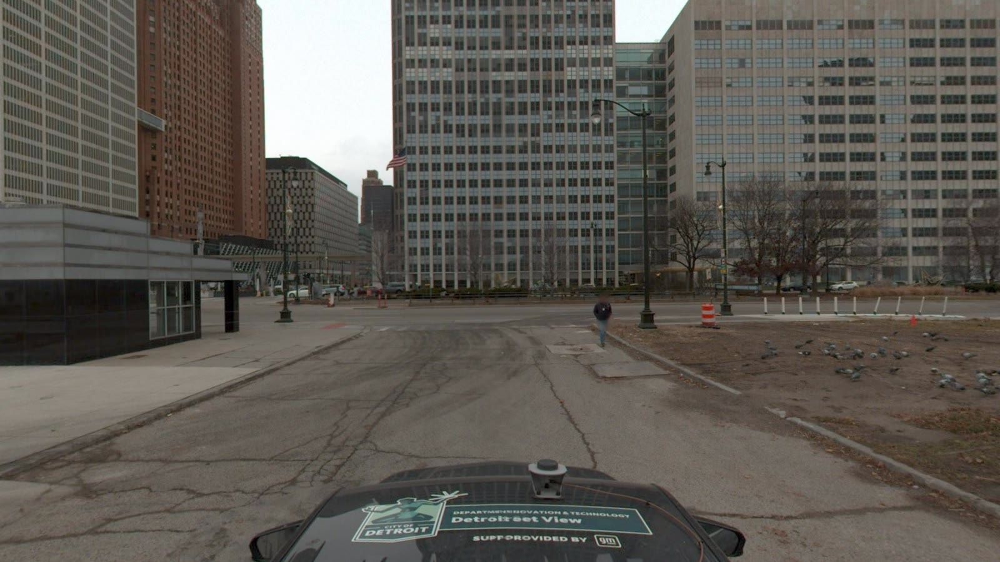
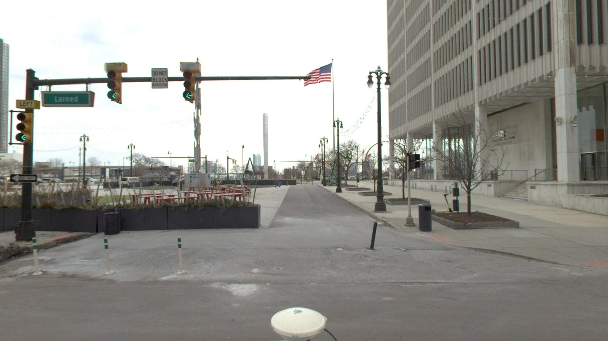
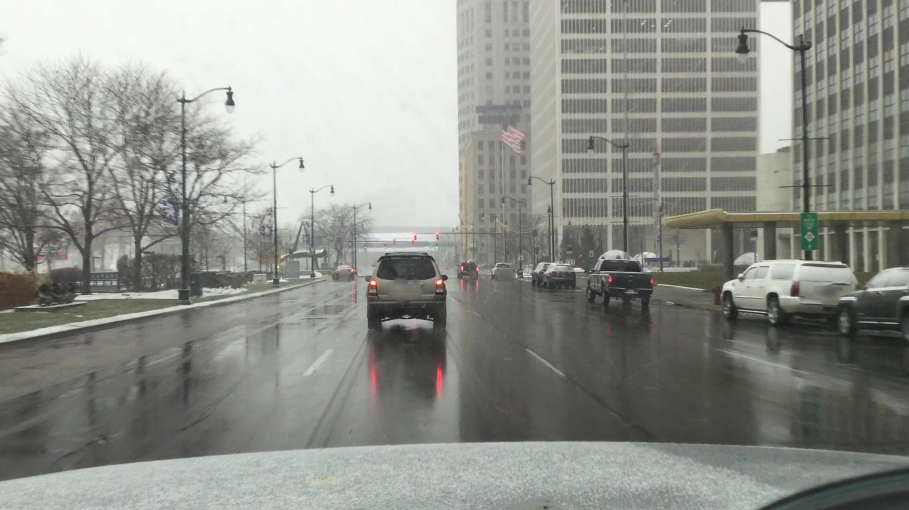
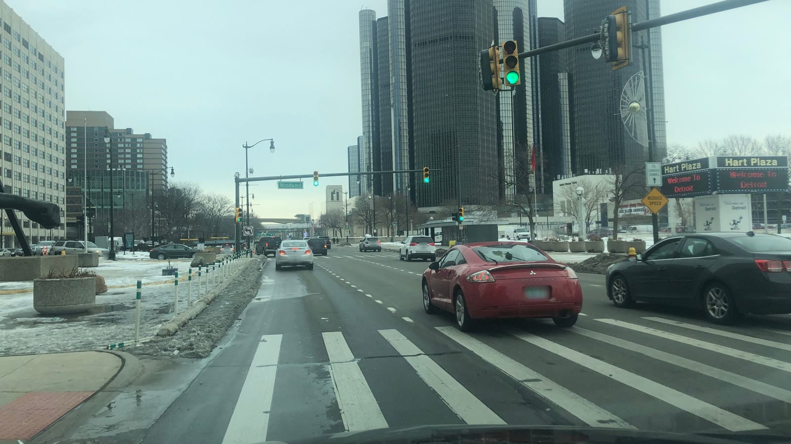

デトロイト水蒸気ルート
指定したスポットだけを、何周もくり返し回るためのルートと、① への進入方向（2026-10-29 作成）
① 周辺：くり返し回るルート
地図右上で周回A／B と進入方向の表示を切り替えられる。線の上の ▶ が進む向き。
周回A：① で U ターンして回る1 周 0.85 km・約 1 分（OSRM 推定）
- E Jefferson Ave を西へ進み、① の手前で中央分離帯の切れ目へ左折して U ターン（① を通過）
- E Jefferson Ave を東へ約 280 m
- Brush St の分離帯の切れ目で U ターンして西へ
- ① に戻って 1 周（約 0.85 km・約 1 分半）、これをくり返す
周回B：① を直進して先で U ターン1 周 2.75 km・約 4 分（OSRM 推定）
- E Jefferson Ave を西へ、① の横を U ターンせずに直進
- ② を通過して W Jefferson Ave をそのまま西へ約 0.9 km
- Steve Yzerman Dr 付近（Joe Louis Arena 跡の車庫ランプ前）で U ターンして東へ
- ① の横を東向きに通過し、Brush St の切れ目で U ターンして西へ戻る（1 周 約 2.75 km・約 4 分半）
周回C：④ の 3 か所をまとめて回る1 周 2.19 km・約 5 分（OSRM 推定）
- E Alexandrine St を東（病院側）から西へ進み、④-1 を通過して Woodward Ave を横断
- W Alexandrine St をそのまま西へ、Cass Ave を左折して南へ
- ⑤（Cass Ave × MLK Blvd）を左折して東へ、Woodward Ave を左折して北へ
- Woodward Ave を北へ ④-3 → ④-2 → ④-1 の順に通過（④-1 は南から北への直進でも通る）
- ⑥（Willis St）を右折、John R St を右折して南へ、E Alexandrine St へ右折して ④-1 に戻る（1 周 約 2.2 km・約 5 分）
① への進入方向
紫の番号つき矢印が進入方向（地図は上の ① 周辺の地図）。写真は各方向の道で ① に向かって進んでいるときのもの（Mapillary）。5 つ目は指定がなかったため、西から東（E Jefferson Ave 東行き）を候補として点線で入れた。
1南から北

2南から西

3北から南

4東から南西

5西から東（5つ目の候補）

④ 周辺：3 か所をまとめて回るルート
E Alexandrine St は上下線が分かれた道で、OSM のデータでは John R St から戻るところで少し東側を回る形になる。現地の右折可否は要確認。
指定スポットとリストのピン
指定の地点の近く（20 m 以内）にリスト「水蒸気」のピンがあれば、そのピンに置き換えた。
| 番号 | リストのピン | 場所 |
|---|
| ① | #16 | Jefferson Ave の中央分離帯の西端（Woodward 交差点） |
| ② | #13 | W Jefferson Ave 西行き（2連続） |
| ③ | #1 | Griswold St × Michigan Ave |
| ④-1 | #17 | Woodward Ave × E Alexandrine St（右車線） |
| ④-2 | #37 | Woodward Ave（3931 番地付近） |
| ④-3 | #6 | Woodward Ave（3711 番地付近） |
| ⑤ | ピンなし | Cass Ave × MLK Blvd の交差点 |
| ⑥ | ピンなし | Woodward Ave × Willis St の交差点 |
クレジット
- ルート：OSRM（OpenStreetMap のデータ）による推定。© OpenStreetMap contributors
- 写真：Mapillary（mapillary.com）CC BY-SA 4.0